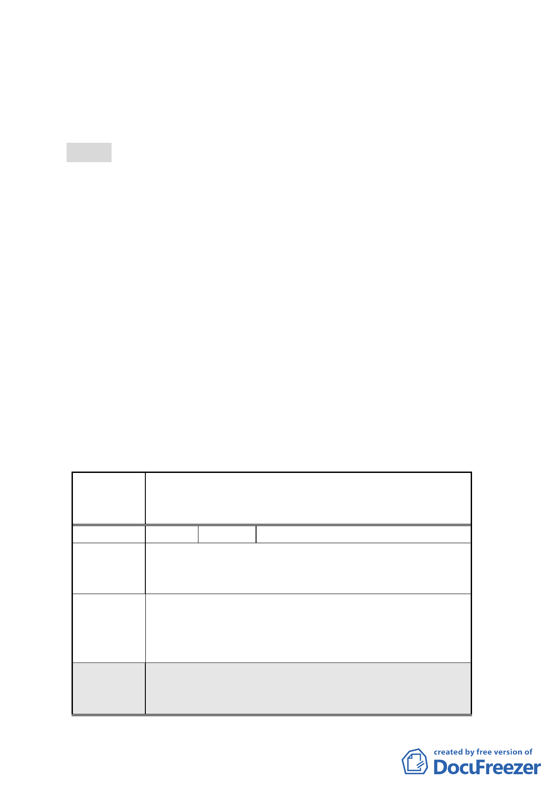

五、辦理機關：臺北市政府。
六、法令依據：都市計畫法第 27 條第 1 項第 4 款。
七、公民或團體陳情意見：3 件。
附件2
決議：
一、本案有關特定商業區（A）之建蔽率規定，考量建築物底層商
業經營需求，建蔽率仍維持為 60％，但建築物高度超過 15 公
尺部分，其量體投影面積不得超過該建築基地面積之 40％。
二、特定商業區（A）最小建築基地規模，同意配合市府抵價地面
積，調降為 1600 平方公尺。
三、計畫書第 6 頁「參、變更計畫內容」「二、土地使用分區管制
規定」第 2 列，原計畫與新計畫之分區名稱應修正為「特定
商業區（A）」。
四、 本案除應依前述各項決議修正外，其餘依市府公展計畫書圖
內容通過。
五、公民或團體所提意見審決如後附綜理表。
臺北市都市計畫委員會 公民或團體陳情意見綜理表
案名
變更臺北市南港車站特定專用區部分特定商業區及
部分體育場用地為道路用地暨修訂土地使用管制規
定計畫案
編號
1 陳情人 張惠美
關於由忠孝東路製勤力橋延伸中研里 12 巷通路，將
陳情理由 會嚴重影響本社區安寧及停車問題。
是否能將忠孝東路至勤力橋之路段改建為捷運支
建議辦法 線，這樣更能符合節能減碳，而政府不是鼓勵大家儘
量搭乘大眾運輸工具嗎。
委員會
決議
1.本項建議經市府表示關於舊庄地區設置捷運支線
議題，捷運局前於 96 年業綜合考量該區公車服務
系統狀況、土地取得及興建費用等，評估為不可行。
5